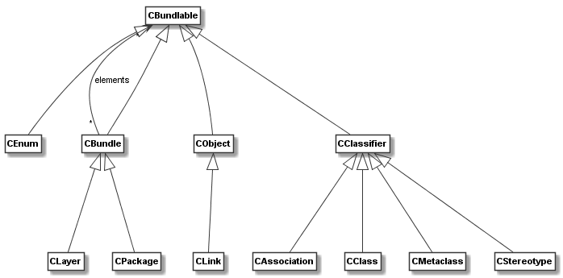

codeable_models.CBundlable¶
-
class
codeable_models.CBundlable(name, **kwargs)¶ CBundlableis a superclass for all elements in Codeable Models that can be placed in aCBundle, which is used for grouping elements. Elements that can be bundled areCClass,CObject, etc. The class is usually not used directly but via its bundable subclasses.Superclasses:
CNamedElement- Parameters
name (str) – An optional name.
**kwargs – Accepts keyword args defined as
legal_keyword_argsby subclasses.
CBundlableis superclass of all classes that can be placed in aCBundleas shown in the figure below. Please note that bundles can be placed in bundles in order to model composite structures.-
property
bundles¶ Property that gets or sets the list of bundles this bundable element is part of. For the setter,
Noneor[]can be used to remove the element from all bundles. In the setter, a single parameter of typeCBundlewill set this single bundle as the only bundle of the element. A list of bundles (i.e., list elements of typeCBundle) will set the whole list.- Type
list[CBundle]|CBundle
-
delete()¶ Delete the element and remove the element from all bundles it is part of. Calls
delete()on superclass.- Returns
None
-
get_connected_elements(**kwargs)¶ Get all elements this element is connected to.
- Parameters
**kwargs – Configuration parameters for the method
- Returns
List of connected elements.
- Return type
List[CBundlable]
Per default associations and inheritance relations are included. Use the following
**kwargsto specify which connections are included.add_bundles(bool):Default value: False. If set to True, relations to bundles are included in the returned list.
process_bundles(bool):Default value: False. If set to True, elements in connected bundles will be processed and all elements in the bundle will be added recursively (i.e. their connections will be processed, too) to the returned list.
stop_elements_inclusive(list of CNamedElements):Default value: []. If set, searching will be stopped whenever an element on the list in encountered. The stop element will be added to the result.
stop_elements_exclusive(list of CNamedElements):Default value: []. If set, searching will be stopped whenever an element on the list in encountered. The stop element will not be added to the result.
add_stereotypes(bool):Default value: False. If set to True, relations to stereotypes are included in the returned list. The option is only applicable on
CMetaclass,CBundle, orCStereotype.
process_stereotypes(bool):Default value: False. If set to True, relations to stereotypes will be processed and all elements connected to the stereotype will be added recursively (i.e. their connections will be processed, too) to the returned list. The option is only applicable on
CMetaclass,CBundle, orCStereotype.
add_associations(bool):Default value: False. If set to True, relations to associations (i.e., the association objects) are included in the returned list. The option is only applicable on
CMetaclass,CClass, orCAssociation.